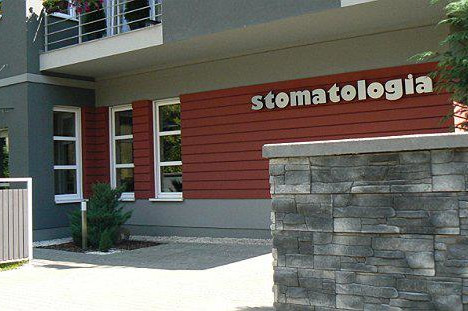
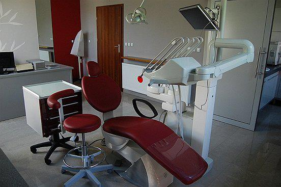
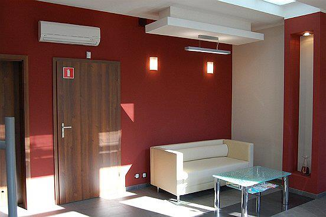
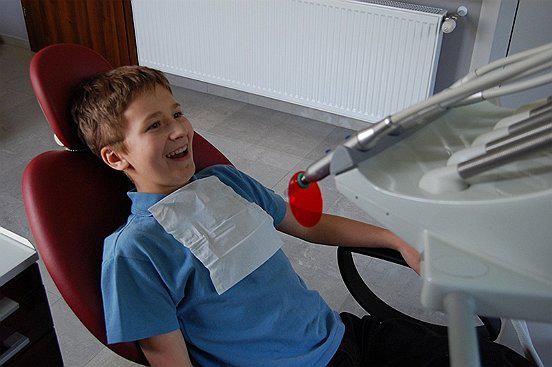
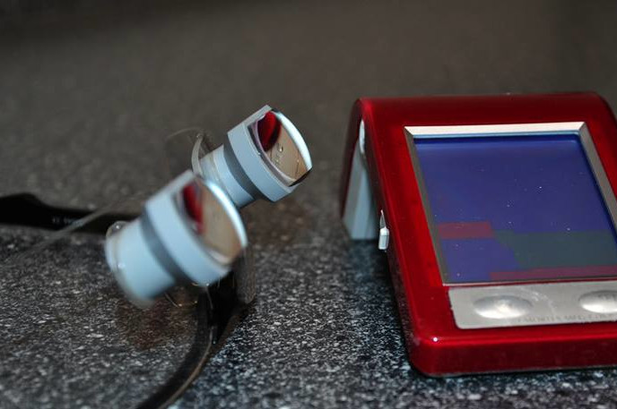
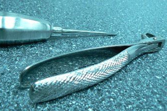

Zakład Opieki Zdrowotnej MADENT powstał w 2008 roku w Tarnowskich Górach. Założycielką i właścicielką gabinetu jest lekarz stomatolog Małgorzata Hrynkiewicz-Machura. Gabinet oferuje wysokiej jakości kompleksową opiekę stomatologiczną, a także dobrej klasy sprzęt. Wszystkie zabiegi wykonywane są pod kontrolą radiowizjografii cyfrowej. Stresujące dla pacjentów zabiegi wykonywane są w miłej i sympatycznej atmosferze.



Właścicielka zakładu intensywnie podnosi swoje kwalifikacje w różnych dziedzinach stomatologii, aby zapewnić swoim pacjentom szeroki wachlarz usług zgodny z najnowszymi technikami w stomatologii.
Podstawowym celem gabinetu jest satysfakcja i zadowolenie pacjentów z leczenia. Oferta skierowana jest do osób w każdym wieku niezależnie od płci.
Zakres opieki stomatologicznej dotyczy:
profilaktyki stomatologicznej,
stomatologii zachowawczej,
endodoncji,
protetyki,
chirurgii stomatologicznej.



Nasze usługi
Profilaktyka
usuwanie osadów i kamienia nazębnego;
piaskowanie zębów;
fluoryzacja kontaktowa zębów mlecznych i stałych;
przegląd stomatologiczny zębów przy pomocy kamery wewnątrzustnej.
Endodoncja
leczenie endodontyczne wszystkich zębów stałych;
chemiczno-mechaniczne opracowywanie kanałów korzeniowych przy użyciu narzędzi rotacyjnych i endometru.
Chirurgia stomatologiczna
proste niepowikłane ekstrakcje zębów stałych i mlecznych;